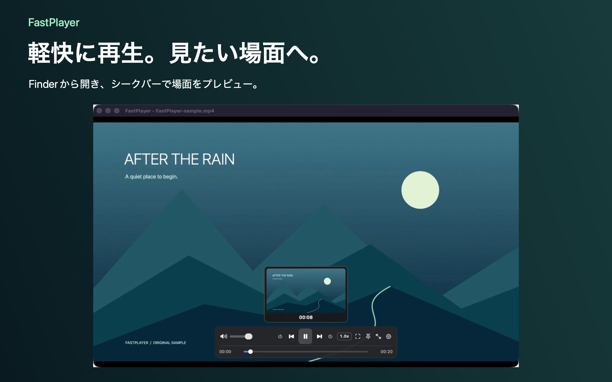
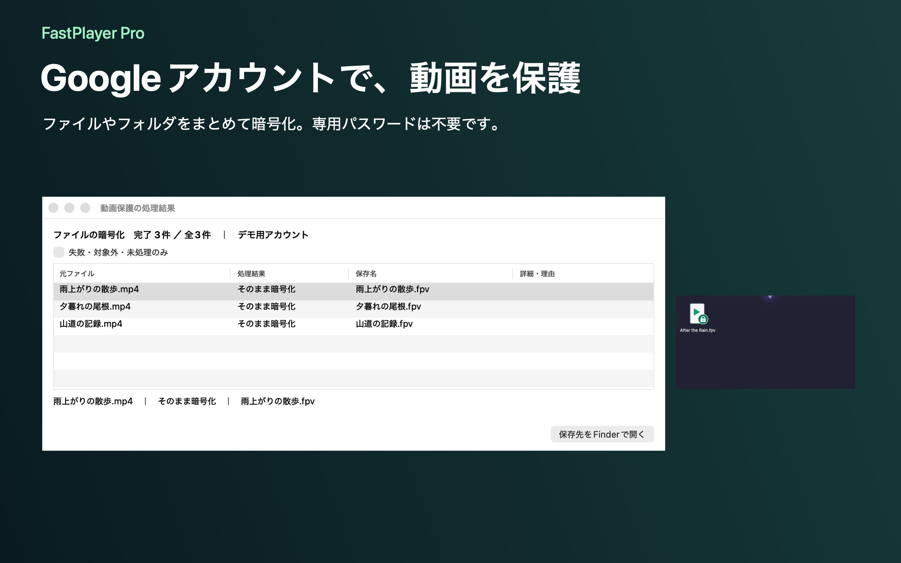
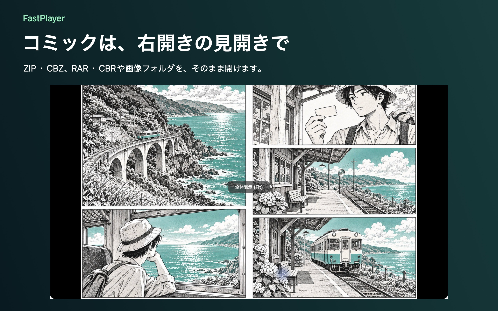
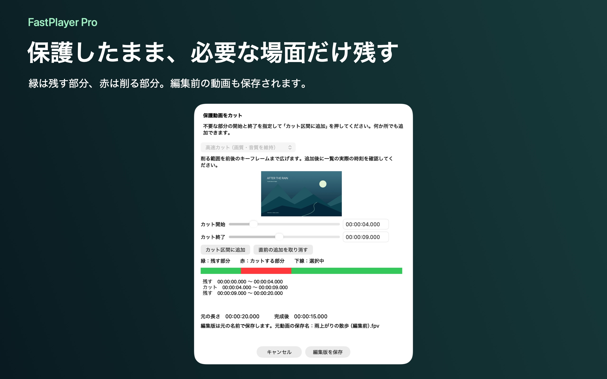

<!doctype html>
<html lang="ja"><head><meta charset="utf-8"><meta name="viewport" content="width=device-width,initial-scale=1"><meta name="description" content="FastPlayerはApple Silicon搭載Mac向けの動画プレイヤー。字幕学習、コミック閲覧、Googleアカウントに結び付けた動画保護を提供します。"><title>FastPlayer — Macの動画・字幕学習・動画保護 | estechfy</title><link rel="canonical" href="https://estechfy.github.io/public/fastplayer/"><link rel="icon" type="image/png" href="assets/fastplayer-logo.png"><link rel="stylesheet" href="assets/site.css"></head><body>
<a class="skip" href="#main">本文へ移動</a><header class="wrap top"><a class="brand" href="./">FastPlayer</a><nav aria-label="ナビゲーション"><a href="./">ホーム</a><a href="privacy/">プライバシー</a><a href="terms/">利用規約</a><a href="./#support">サポート</a><a href="../">公開ポータル</a></nav></header>
<main class="wrap" id="main">
<section class="hero"><div><span class="eyebrow">MAC VIDEO PLAYER · ESTECHFY</span><h1>軽快に動画を再生。<br>コミックは見開きで。</h1><p class="lead">Finderから動画やコミックを開ける軽量Macプレイヤー。大切な動画はGoogleアカウントで暗号化し、保護したまま再生・シーク・カットできます。</p><span class="tag">Apple Silicon搭載Mac · macOS 14.0以降</span></div></section>
<section class="section"><h2>再生から、学習と保護まで。</h2><div class="cards"><article class="card"><h3>動画を再生する</h3><p>動画形式に応じた再生経路、速度変更、区間リピート、回転・ミラー表示。</p></article><article class="card"><h3>字幕とコミックを楽しむ</h3><p>字幕の表示・調整、学習のための再生操作、CBZなどのコミック閲覧。二重字幕などのPro機能は30日間無料で体験できます。</p></article><article class="card"><h3>アカウントで動画を保護する</h3><p>動画を端末内で暗号化し、作成したGoogleアカウントの鍵で再生。必要な範囲だけをメモリ上で復号します。</p></article></div></section>
<section class="section" id="screenshots"><h2>FastPlayerの操作画面</h2><div class="cards"><figure class="card"><a href="assets/screenshots/ja/01-playback.jpg"></a><figcaption>シークバーで場面をプレビュー · <a href="assets/screenshots/en-US/01-playback-en.jpg" lang="en">English</a></figcaption></figure><figure class="card"><a href="assets/screenshots/ja/02-encryption.jpg"></a><figcaption>Googleアカウントでファイル・フォルダを暗号化 · <a href="assets/screenshots/en-US/02-encryption-en.jpg" lang="en">English</a></figcaption></figure><figure class="card"><a href="assets/screenshots/ja/03-comics.jpg"></a><figcaption>コミックを右開きの見開きで読む · <a href="assets/screenshots/en-US/03-comics-en.jpg" lang="en">English</a></figcaption></figure><figure class="card"><a href="assets/screenshots/ja/04-protected-cut.jpg"></a><figcaption>残す部分を確認して保護動画をカット · <a href="assets/screenshots/en-US/04-protected-cut-en.jpg" lang="en">English</a></figcaption></figure></div></section><section class="section" id="pricing"><h2>動画を暗号化するなら、FastPlayer Pro。</h2><p>アプリ本体は無料。新規暗号化と保護動画のカット保存は30日間の無料体験または買い切りProで利用できます。体験終了後の自動請求はありません。作成済みの保護動画の再生・暗号化解除は、作成時のGoogleアカウントで引き続き無料です。 日本の予定価格は買い切り1,500円です。</p>での初回公開を準備中です。配布開始後に、このページでダウンロード先をご案内します。</p></section><section class="section"><h2>Googleへのサインインは、動画保護のため。</h2><p>通常のローカル動画再生にGoogleアカウントは不要です。保護動画の作成・再生では、Googleの本人確認とDriveのアプリ専用データへのアクセスを利用します。</p><ol><li>「動画保護 → Googleにサインイン…」でDriveのアプリ専用データへのアクセスを許可します。認証済みならアカウントとサインアウトを表示します。</li><li>「ファイルを暗号化…」で元動画と保存先を選びます。鍵は本人のDriveへ自動保存し、元動画はそのまま残します。</li><li>「ファイル → 開く…」から作成時と同じGoogleアカウントで再生します。Finderからも開けます。「動画保護の使い方…」で操作を確認できます。</li></ol><h3>フォルダも一括で保護。Finderで完了を確認。</h3><p>「動画保護 → フォルダを暗号化…」で、配下の対応動画を元の階層で変換できます。元データはそのまま残し、変換先を別に作ります。</p><p>錠前のアイコンと <code>.fpv</code> が完成した保護動画の目印です。変換中のファイルはこの正式名で公開しません。フォルダ名は「変換中」「保護済み」「一部未変換」「未変換」「中止」で区別します。対応外・失敗・未処理の理由は処理結果の一覧画面で確認できます。</p><div class="notice"><p><strong>動画本体はGoogle Driveへアップロードしません。</strong><br>保存するのは動画鍵と識別情報です。通常のDriveファイルの内容を読む権限は要求しません。Google認証や鍵の取得を確認できない場合、保護動画は再生できません。</p></div><p class="small">保護対象はネイティブ再生可能なH.264／HEVCのMP4・MOV・M4V。AVIや映像時刻の修復が必要な対応動画はMP4に変換してから暗号化し、変換内容を結果一覧に表示します。Google認証・鍵取得にはインターネット接続が必要です。鍵の削除やアカウントの喪失で復号できなくなることがあるため、元動画は別途保管してください。</p><div class="actions"><a class="button" href="privacy/">データの扱いを確認</a><a class="button secondary" href="terms/">利用規約を確認</a></div></section>
<section class="section"><h2>暗号化を戻す。保護したままカットする。</h2><p>ファイル・フォルダを選んで一括で暗号化を戻せます。保護前にMP4へ変換した素材は、MP4として戻ります。隠しファイルは一括処理の対象外です。</p><p>保護動画を開き「動画保護」からカットを選ぶと、残す区間と削る区間、完成時間を確認できます。高速カットは再エンコードせず画質・音質を維持し、削る範囲をキーフレームに合わせて表示します。指定位置を優先する変換方式も選べます。完成・検証後は元動画を「（編集前）」として残し、編集版に元の名前を付けます。</p><p class="small">NASでは残す映像の読出し、新しいファイルの書込みと検証に時間がかかります。元の映像を破壊せず処理します。オンライン字幕検索は初回公開版に含めません。外部字幕ファイルと内蔵字幕は利用できます。</p></section><section class="section" id="support"><h2>サポート・配布のご案内</h2><p>提供者は <strong>estechfy（Estechfy合同会社）</strong> です。ご質問・使ってみた感想・不具合は <a href="mailto:support@estechfy.com">support@estechfy.com</a> へお寄せください。レビューやご意見の投稿は任意で、機能の利用条件ではありません。配布・更新や有料機能の条件は、提供者の正式な案内および購入画面をご確認ください。</p><p>問い合わせではGoogleのパスワード、認証トークン、動画鍵を送らず、まずエラーの文面と利用環境をお知らせください。</p><p class="small">オープンソース部品の情報・対応ソースは <a href="https://estechfy.github.io/public/fastplayer/compliance/">ライセンス関連資料</a> で公開しています。</p></section></main>
<footer class="wrap footer"><div class="links"><a href="privacy/">プライバシーポリシー</a><a href="terms/">利用規約</a><a href="assets/fastplayer-logo.png" download="fastplayer-logo.png">ロゴPNG</a><a href="../">estechfy 公開ポータル</a></div><p>© 2026 estechfy · FastPlayer</p></footer></body></html>